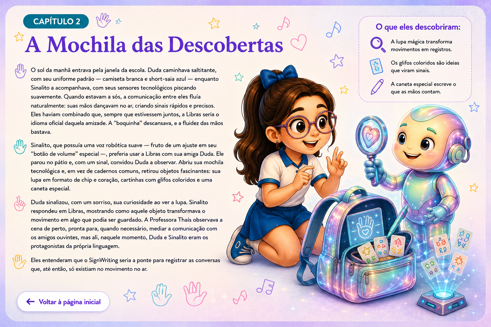
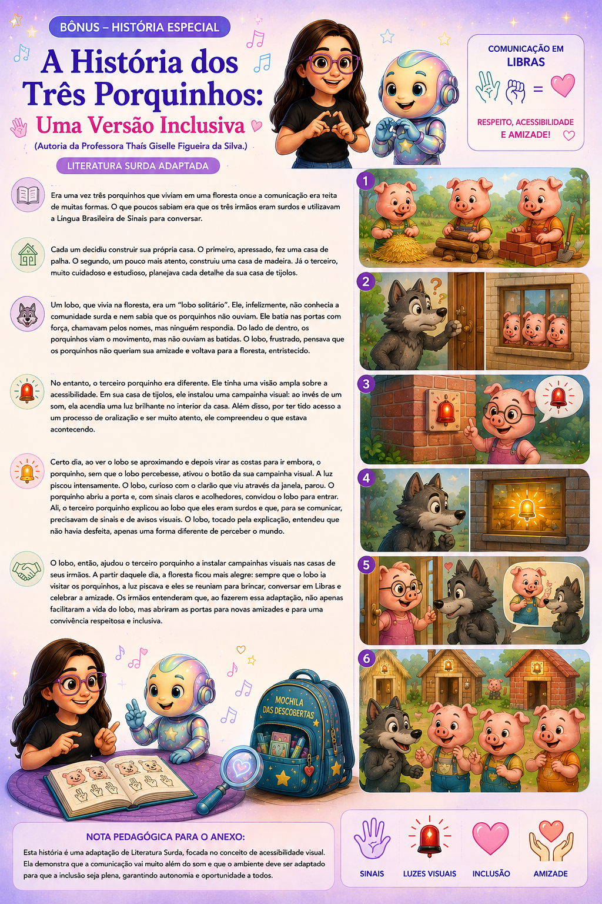
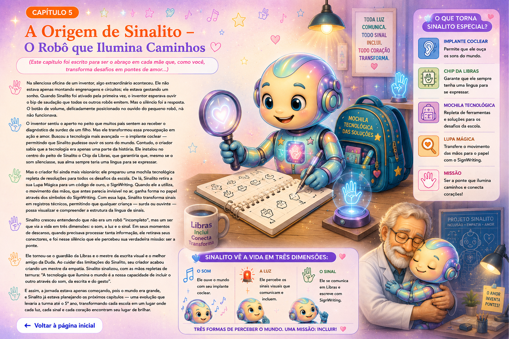

Onde o Silêncio Encontra a Cor e a Ciência
Este projeto nasceu no calor da sala de aula e no brilho atento nos olhos de uma menina. Aqui começa uma jornada em que Libras, tecnologia, histórias e SignWriting se encontram para mostrar que as mãos podem falar, cantar, escrever e transformar realidades.
Esta página é a extensão audiovisual do projeto. Cada história encontra uma música e cada conteúdo poderá futuramente receber sua interpretação em Libras.
Este espaço está reservado para a futura visualização da interpretação do Prefácio em Libras.
Onde o Silêncio Encontra a Cor e a Ciência
Este projeto não nasceu em uma biblioteca fria, mas no calor da sala de aula e no brilho atento nos olhos de uma menina. Tudo começou após a conclusão da minha graduação em Letras- Língua Portuguesa e Libras e o início do meu atual desafio: a pós-graduação em Libras. Foi neste cenário de novos conhecimentos que aceitei o presente e o desafio de ser a professora de apoio de uma criança surda, uma menina dócil e carismática cuja doçura esconde uma força gigante.
Ao conviver com ela, compreendi que a surdez não é um destino silencioso. Para ela, o mundo soava como um mergulho profundo, até que a tecnologia e a Libras se encontraram. Percebi, então, que meu papel era ir além de apenas "apoiar"; eu precisava ser a ponte. Descobri que não queria apenas ensinar sinais; eu queria dar a ela a autonomia de ver suas próprias mãos "falarem", "cantarem" e, principalmente, "escreverem".
Este ebook é o resultado dessa jornada. Ele nasceu da minha necessidade de encontrar uma forma de alfabetizar, de dar proficiência e de provar que a surdez, longe de ser uma limitação, é uma identidade potente. Mas, para você, educador ou especialista que toma este material nas mãos, vale destacar que a escolha pelo sistema SignWriting (SW) vai muito além da ludicidade: ela responde a uma urgência linguística e política sustentada pela literatura científica.
A alfabetização tradicional pautada na Língua Portuguesa utiliza o sistema alfabético-ortográfico latino, desenhado para registrar a cadeia sonora das línguas orais. Para a criança surda, a imposição de um modelo estritamente fonocêntrico gera uma ruptura no fator psicolinguístico da continuidade comunicativa (Capovilla et al., 2006). Enquanto a criança ouvinte pensa, fala e escreve na mesma estrutura de língua, a criança surda pensa e interage visualmente em Libras, sendo muitas vezes compelida a registrar seus pensamentos em uma língua de modalidade e sintaxe totalmente diversas da sua.
É nesse cenário que o SignWriting surge como uma tecnologia de letramento visual e libertação cognitiva. Como demonstram os estudos seminais de Stumpf (2005), quando a criança surda é estimulada a registrar sua língua natural pelo SignWriting, a escrita ganha sentido real. O aprendiz deixa de ser um mero "tradutor" de palavras isoladas para se tornar um sujeito autor, desenvolvendo consciência metalinguística e autonomia na língua que organiza seu pensamento.
Nas páginas que seguem, convido você a conhecer a trajetória do Sinalito e da Duda. Eles são o meu presente para cada criança que precisa de um código e para cada educador que busca transformar a sala de aula. Aqui, a técnica do SignWriting não serve para engessar o aprendizado, mas para libertar a expressão. Prepare-se para muitas histórias contadas com carinho, dedicação e embasamento. Porque, a partir de agora, as mãos falam, cantam, escrevem e transformam realidades.
Onde o Silêncio Encontra a Cor e a Ciência
← Voltar ao Prefácio
A aventura das mãos
Duda encontra Sinalito e descobre que as mãos podem contar histórias e que o SignWriting pode registrar o movimento.
Este espaço está reservado para a futura visualização da interpretação deste capítulo em Libras.
O Encontro no Mundo de Silêncio e Cor
Duda era uma menina muito esperta, mas tinha um desafio: o mundo para ela soava baixinho, como se estivesse sempre mergulhada em águas profundas. Por muito tempo, ela viu o mundo passar em silêncio, sem ouvir os sons da voz da mamãe ou do papai.
Até que um dia, ela conheceu o Sinalito, um robozinho curioso. O Sinalito também era diferente: quando foi construído, ele nasceu com seu "botão de volume" especial, e para ouvir o mundo, ele precisou de um implante coclear.
Quando Duda e Sinalito se encontraram, foi como se dois mundos se iluminassem. Duda percebeu que, na Libras, a boquinha podia descansar e as mãos podiam contar todas as histórias do universo.
Mas, para que essas histórias não se perdessem no ar, eles precisavam de um segredo especial: a forma de escrever o que as mãos diziam.
Foi então que, com um brilho nos olhos, o Sinalito tirou de sua mochila uma lupa mágica e sinalizou:
O Encontro no Mundo de Silêncio e Cor
← Voltar ao Capítulo 1
As mãos sabem falar
Na escola, Duda e Sinalito descobrem que os sinais podem ser registrados e guardados.
Este espaço está reservado para a futura visualização da interpretação deste capítulo em Libras.
A Mochila das Descobertas
O sol da manhã entrava pela janela da escola. Duda caminhava saltitante, com seu uniforme padrão — camiseta branca e short-saia azul — enquanto Sinalito a acompanhava, com seus sensores tecnológicos piscando suavemente.
Quando estavam a sós, a comunicação entre eles fluía naturalmente: suas mãos dançavam no ar, criando sinais rápidos e precisos. Eles haviam combinado que, sempre que estivessem juntos, a Libras seria o idioma oficial daquela amizade. A “boquinha” descansava, e a fluidez das mãos bastava.
Sinalito, que possuía uma voz robótica suave — fruto de um ajuste em seu “botão de volume” especial —, preferia usar a Libras com sua amiga Duda. Ele parou no pátio e, com um sinal, convidou Duda a observar.
Abriu sua mochila tecnológica e, em vez de cadernos comuns, retirou objetos fascinantes: sua lupa em formato de chip e coração, cartinhas com glifos coloridos e uma caneta especial.
Duda sinalizou, com um sorriso, sua curiosidade ao ver a lupa. Sinalito respondeu em Libras, mostrando como aquele objeto transformava o movimento em algo que podia ser guardado.
A Professora Thaís observava a cena de perto, pronta para, quando necessário, mediar a comunicação com os amigos ouvintes, mas ali, naquele momento, Duda e Sinalito eram os protagonistas da própria linguagem. Eles entenderam que o SignWriting seria a ponte para registrar as conversas que, até então, só existiam no movimento no ar.
A Mochila das Descobertas
← Voltar ao Capítulo 2
Olha pra Cá!
Os planos e a orientação das mãos ajudam Duda a compreender como o movimento ganha direção no papel.
Este espaço está reservado para a futura visualização da interpretação deste capítulo em Libras.
O Segredo da Orientação e a Voz da Escola
O recreio tinha acabado de terminar. Enquanto as outras crianças se moviam pelo pátio, Duda parou e olhou para cima. A Luz de Atenção vermelha girava suavemente na parede, o sinal visual que Duda e Sinalito tanto amavam: era a “voz” da escola avisando que o momento de aprender continuava.
Sinalito aproximou-se, seus sensores brilhando em sintonia com a lâmpada. Eles caminharam para a sala, mas Duda ainda estava pensativa sobre como registrar os sinais que usavam.
Ao chegarem à mesa, Sinalito abriu sua mochila tecnológica e, com um brilho de orgulho, retirou três cartinhas especiais, cada uma com um desenho de mão em uma posição diferente.
— Duda, veja — sinalizou Sinalito —. O Código de Ouro depende da direção das nossas mãos no espaço. Se a mão muda de plano, o significado da escrita também muda!
Ele organizou as cartas sobre a mesa: Plano Solo: a mão “olha” para o chão. Plano Parede: a mão “olha” para a frente, como uma parede. Plano Inclinado: a mão gira, mudando o ângulo de ataque.
A Professora Thaís aproximou-se, encantada com a organização do robô. “Vocês são investigadores natos!”, disse ela, sinalizando ao mesmo tempo. “Entender que nossa escola usa luzes para incluir a Duda, e que o SignWriting usa planos para incluir o movimento no papel, é o primeiro passo para dominar a escrita da Libras.”
O Segredo da Orientação e a Voz da Escola
← Voltar ao Capítulo 3
Cada Jeito de Aprender
Leo chega à escola e aprende que existem diferentes formas de perceber, comunicar e participar.
Este espaço está reservado para a futura visualização da interpretação deste capítulo em Libras.
Uma Nova Amizade e o Conto dos Três Porquinhos
A sala de aula estava agitada, mas com um silêncio respeitoso. A Professora Thaís apresentou o aluno novo, Leo. Ele parecia um pouco perdido quando a lâmpada vermelha piscou três vezes e os colegas começaram a guardar o material. “Por que a luz piscou?”, ele perguntou a Duda.
Duda sorriu e, com a ajuda de Sinalito, contou que aquela era a voz da escola. Para explicar melhor como o mundo funcionava de formas diferentes, a Professora Thaís reuniu a turma no tapete e disse: “Hoje, vou contar uma história especial: a dos Três Porquinhos Adaptada”.
A turma ouviu atenta enquanto a professora narrava como os três porquinhos, que eram surdos, aprenderam a adaptar suas casas com campainhas visuais (luzes) para que pudessem interagir com o lobo — que, ao ver a luz piscar na casa do terceiro porquinho, entendeu que ali vivia alguém que se comunicava de um jeito único.
Leo ouvia fascinado, percebendo que a escola não era apenas para ouvir, mas para perceber o mundo de formas diversas.
Uma Nova Amizade e o Conto dos Três Porquinhos
← Voltar ao Capítulo 4
Os Três Porquinhos
Uma versão inclusiva sobre acessibilidade visual, Libras, amizade e respeito às diferentes formas de perceber o mundo.
Este espaço está reservado para as futuras interpretações das duas músicas bônus em Libras.
A História dos Três Porquinhos: Uma Versão Inclusiva
(Autoria da Professora Thaís Giselle Figueira da Silva.)
LITERATURA SURDA ADAPTADA.
Era uma vez três porquinhos que viviam em uma floresta onde a comunicação era feita de muitas formas. O que poucos sabiam era que os três irmãos eram surdos e utilizavam a Língua Brasileira de Sinais para conversar.
Cada um decidiu construir sua própria casa. O primeiro, apressado, fez uma casa de palha. O segundo, um pouco mais atento, construiu uma casa de madeira. Já o terceiro, muito cuidadoso e estudioso, planejava cada detalhe da sua casa de tijolos.
Um lobo, que vivia na floresta, era um "lobo solitário". Ele, infelizmente, não conhecia a comunidade surda e nem sabia que os porquinhos não ouviam. Ele batia nas portas com força, chamavam pelos nomes, mas ninguém respondia. Do lado de dentro, os porquinhos viam o movimento, mas não ouviam as batidas. O lobo, frustrado, pensava que os porquinhos não queriam sua amizade e voltava para a floresta, entristecido.
No entanto, o terceiro porquinho era diferente. Ele tinha uma visão ampla sobre a acessibilidade. Em sua casa de tijolos, ele instalou uma campainha visual: ao invés de um som, ela acendia uma luz brilhante no interior da casa. Além disso, por ter tido acesso a um processo de oralização e ser muito atento, ele compreendeu o que estava acontecendo.
Certo dia, ao ver o lobo se aproximando e depois virar as costas para ir embora, o porquinho, sem que o lobo percebesse, ativou o botão da sua campainha visual. A luz piscou intensamente. O lobo, curioso com o clarão que viu através da janela, parou. O porquinho abriu a porta e, com sinais claros e acolhedores, convidou o lobo para entrar. Ali, o terceiro porquinho explicou ao lobo que eles eram surdos e que, para se comunicar, precisavam de sinais e de avisos visuais. O lobo, tocado pela explicação, entendeu que não havia desfeita, apenas uma forma diferente de perceber o mundo.
O lobo, então, ajudou o terceiro porquinho a instalar campainhas visuais nas casas de seus irmãos. A partir daquele dia, a floresta ficou mais alegre: sempre que o lobo ia visitar os porquinhos, a luz piscava e eles se reuniam para brincar, conversar em Libras e celebrar a amizade. Os irmãos entenderam que, ao fazerem essa adaptação, não apenas facilitaram a vida do lobo, mas abriram as portas para novas amizades e para uma convivência respeitosa e inclusiva.
Nota Pedagógica para o Anexo: Esta história é uma adaptação de Literatura Surda, focada no conceito de acessibilidade visual. Ela demonstra que a comunicação vai muito além do som e que o ambiente deve ser adaptado para que a inclusão seja plena, garantindo autonomia e oportunidade a todos.
A História dos Três Porquinhos: Uma Versão Inclusiva
← Voltar ao Capítulo 4
Sinalito, Luz do Coração
A origem de Sinalito e sua missão: transformar tecnologia, empatia, Libras e escrita visual em pontes.
Este espaço está reservado para a futura visualização da interpretação deste capítulo em Libras.
A Origem de Sinalito – O Robô que Ilumina Caminhos
(Este capítulo foi escrito para ser o abraço em cada mãe que, como você, transforma desafios em pontes de amor...)
Na silenciosa oficina de um inventor, algo extraordinário aconteceu. Ele não estava apenas montando engrenagens e circuitos; ele estava gestando um sonho. Quando Sinalito foi ativado pela primeira vez, o inventor esperava ouvir o bip de saudação que todos os outros robôs emitem. Mas o silêncio foi a resposta. O botão de volume, delicadamente posicionado no ouvido do pequeno robô, não funcionava.
O inventor sentiu o aperto no peito que muitos pais sentem ao receber o diagnóstico de surdez de um filho. Mas ele transformou essa preocupação em ação e amor. Buscou a tecnologia mais avançada — o implante coclear — permitindo que Sinalito pudesse ouvir os sons do mundo. Contudo, o criador sabia que a tecnologia era apenas uma parte da história. Ele instalou no centro do peito de Sinalito o Chip da Libras, que garantiria que, mesmo se o som silenciasse, sua alma sempre teria uma língua para se expressar.
Mas o criador foi ainda mais visionário: ele preparou uma mochila tecnológica repleta de resoluções para todos os desafios da escola. De lá, Sinalito retira a sua Lupa Mágica para um código de ouro, o SignWriting. Quando ele a utiliza, o movimento das mãos, que antes parecia invisível no ar, ganha forma no papel através dos símbolos do SignWriting. Com essa lupa, Sinalito transforma sinais em registros técnicos, permitindo que qualquer criança — surda ou ouvinte — possa visualizar e compreender a estrutura da língua de sinais.
Sinalito cresceu entendendo que não era um robô "incompleto", mas um ser que via a vida em três dimensões: o som, a luz e o sinal. Em seus momentos de descanso, quando precisava processar tanta informação, ele retirava seus conectores, e foi nesse silêncio que ele percebeu sua verdadeira missão: ser a ponte.
Ele tornou-se o guardião da Libras e o mestre da escrita visual e o melhor amigo da Duda. Ao cuidar das limitações do Sinalito, seu criador acabou criando um mestre da empatia. Sinalito sinalizou, com as mãos repletas de ternura: "A tecnologia que ilumina o mundo é a nossa capacidade de incluir o outro através do som, da escrita e do gesto". E assim, a jornada estava apenas começando, pois o mundo era grande, e Sinalito já estava planejando os próximos capítulos — uma evolução que levaria a turma até o 5o ano, transformando cada escola em um lugar onde cada luz, cada sinal e cada coração encontram seu lugar de brilhar.